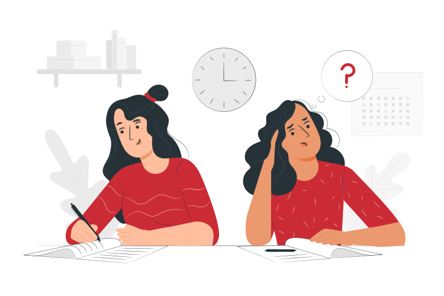

Faça sua denuncia anônima
Canais de Ajuda
Click para acessar
Telefones Úteis
- 190 - Polícia Militar
- 193 - Bombeiros
- 181 - Disque Denúncia
- 180 - Centra de Atendimento à Mulher
100 Desculpas para denunciar
Chega de DESCULPAS! Você não está mais sozinha!
Assim como não existem desculpas para a violência contra a mulher, não há mais desculpas para não pedir ajuda, denunciar qualquer tipo de agressão ou abuso que você esteja sofrendo.
Desculpas como dificuldades de deslocamento, medo, falta tempo, vergonha agora não tem vez.
O portal 100 desculpas disponibiliza na palma da sua mão as ferramentas necessárias para denunciar, pedir ajuda e enfrentar qualquer tipo de agressão que você venha sofrendo.
Deixe o 100 Desculpas te ajudar!
Você não está sozinha!
NÃO SABE IDENTIFICAR SE VOCÊ É VÍTIMA DE VIOLÊNCIA DOMÉSTICA?
Seleciona um item do menu para ler a respeito
Sobre
A violência doméstica, apesar de toda a companha e luta a respeito, ainda faz parte do cotidiano de grande parte das famílias brasileiras, e tem suas origens no lar, aproveitando-se das relações de afeto, independente de idade, raça/etnia e classe social.
Diante de tal quadro, o enfretamento à violência contra a mulher não pode se restringir às condições clínicas ou apenas na criminalização do agressor, deve haver uma rede de acolhimento humanitário, com amparo psicológico, socioeconômico e socioassistencial às vítimas.
Durante o isolamento social, os casos de violência aumentaram de forma exorbitante e também aumentou a dificuldade em pedir ajuda e denunciar esse tipo de agressão.
O projeto 100 Desculpas foi idealizado pensando em facilitar Simplificar e facilitar o acesso e o conhecimento dos principais programas de apoio e acolhimento às vítimas de violência doméstica, bem como os principais mecanismos de combate e medidas protetivas destinadas à sua proteção;
Ofertar um canal de denúncias e de solicitação de ajuda de forma simplificada e segura, inclusive de forma anônima, que acionem serviços de atenção e proteção adequados para a situação exposta;
Divulgar toda a rede de acolhimento e apoio existente com amparo psicológico, socioeconômico e socioassistencial às vítimas, inclusive mantendo contato direto com as atendidas através de aplicativos, com constante monitoramento para qualquer assistência que se mostre necessária;
O portal e o aplicativo 100 Desculpas estão em consonância com os Objetivos Sustentáveis da ONU pela Agenda 2030, Fomentar o empoderamento da mulher quanto à redução das desigualdades em decorrência de gênero em cumprimento ao direcionamento apresentado pelo ODS nº 5 e surgiu a partir da pesquisa: Violência Doméstica e Quarentena: A subnotificação nos tempos de Pandemia, realizada no âmbito do Programa de Mestrado em Desenvolvimento Local, do Centro Universitário Augusto Motta, UNISUAM, orientado pela Professora Doutora Maria Geralda de Miranda, na linha de pesquisa Estado, Sociedade e Desenvolvimento.
Agenda 2030

Alcançar a igualdade de gênero e empoderar todas as mulheres e meninas
A igualdade de gênero não é apenas um direito humano fundamental, mas a base necessária para a construção de um mundo pacífico, próspero e sustentável. O esforço de alcance do ODS 5 é transversal à toda Agenda 2030 e reflete a crescente evidência de que a igualdade de gênero tem efeitos multiplicadores no desenvolvimento sustentável. Muitos avanços em termos de assegurar melhores condições de vida a mulheres e meninas são um importante legado dos ODM. Os Objetivos de Desenvolvimento Sustentável visam intensificar estas realizações, não apenas nas áreas de saúde, educação e trabalho, mas especialmente no combate às discriminações e violências baseadas no gênero e na promoção do empoderamento de mulheres e meninas para que possam atuar enfaticamente na promoção do desenvolvimento sustentável, por meio da participação na política, na economia, e em diversas áreas de tomada de decisão. O desenvolvimento sustentável não será alcançado se as barreiras tangíveis e intangíveis que impedem o pleno desenvolvimento e exercício das capacidades de metade da população não forem eliminadas.
Legislação
LEI 11.340 MARIA DA PENHA
Cria mecanismos para coibir a violência doméstica e familiar contra a mulher, nos termos do § 8º do art. 226 da Constituição Federal, da Convenção sobre a Eliminação de Todas as Formas de Discriminação contra as Mulheres e da Convenção Interamericana para Prevenir, Punir e Erradicar a Violência contra a Mulher; dispõe sobre a criação dos Juizados de Violência Doméstica e Familiar contra a Mulher; altera o Código de Processo Penal, o Código Penal e a Lei de Execução Penal; e dá outras providências.
Além de proteger mulheres em situação de violência e salvar vidas, a Lei n. 11.340/2006 pune os agressores, fortalece a autonomia das mulheres, educa a sociedade e cria meios de assistência e atendimento humanizado, bem como inclui valores de direitos humanos nas políticas públicas para o enfrentamento e combate à violência de gênero.
Esse é um dos mecanismos criados pela lei para coibir e prevenir a violência doméstica e familiar, assegurando que toda mulher, independentemente de classe, raça, etnia, orientação sexual, renda, cultura, nível educacional, idade e religião, goze dos direitos fundamentais inerentes à pessoa humana e tenha oportunidades e facilidades para viver sem violência, com a preservação de sua saúde física e mental e seu aperfeiçoamento moral, intelectual e social.
Pela lei, a violência doméstica e familiar contra a mulher é configurada como qualquer ação ou omissão baseada no gênero que lhe cause morte, lesão, sofrimento físico, sexual ou psicológico e dano moral ou patrimonial. Diante de um quadro como esse, as medidas protetivas podem ser concedidas de imediato, independentemente de audiência das partes e da manifestação do Ministério Público, ainda que o MP deva ser prontamente comunicado.
O que é violência doméstica e familiar ?
De acordo com a Lei Maria da Penha (Lei nº 11.340/2006), é considerada violência doméstica e familiar:
“Qualquer ação ou omissão baseada no gênero que lhe cause morte, lesão, sofrimento físico, sexual ou psicológico e dano moral ou patrimonial”.Ou seja qualquer tipo de agressão, seja ela física, psicológica, moral, patrimonial, sexual, assédio, importunação.
Quem sofre e quem comete violência doméstica ?
A Lei Maria da Penha foi criada para a proteção de qualquer MULHER vítima de violência doméstica e familiar.
Caso um homem sofra esse tipo de violência não poderá se beneficiar das medidas, todavia, será aplicado o Código Penal.
Quanto ao agressor, ao contrário do que se pensa, ele não será apenas o marido ou companheiro, mas qualquer um que se aproveite do ambiente (doméstico e familiar) e que a violência esteja baseada no gênero da vítima (mulher). Pode ser pai, namorado, irmão, etc.A agressão pode ocorrer:
- I – No âmbito da unidade doméstica, compreendida como o espaço de convívio permanente de pessoas, com ou sem vínculo familiar, inclusive as esporadicamente agregadas;
- II – No âmbito da família, compreendida como a comunidade formada por indivíduos que são ou se consideram aparentados, unidos por laços naturais, por afinidade ou por vontade expressa;
- III – Em qualquer relação íntima de afeto, na qual o agressor conviva ou tenha convivido com a ofendida, independentemente de coabitação.
Algumas medidas protetivas
- Afastamento dos agressores do lar da ofendida.
- Proibição do agressor de aproximar-se da vítima, seus familiares e eventuais testemunhas, fixando-se o limite de distância entre eles.
- Proibição do agressor de contato com a ofendida, seus familiares e eventuais testemunhas, por qualquer meio de comunicação.
- Restituição de bens indevidamente subtraídos pelo agressor a ofendida.
- Comparecimento do agressor a programas de recuperação e reeducação.
- Proibição dos agressores de frequentar lugares, a fim de preservar a integridade física e psicológica da vítima, dentre os quais o seu local de trabalho.
- Afastamento do agressor do lar, domicilio ou local de convivência com a ofendida.
- Restrição ou suspensão das visitas do agressor.
- Proibição temporária para celebração de atos e contratos de compra e venda e locação de propriedade em comum, salvo expressa autorização judicial.
- Acompanhamento psicossocial do agressor, por meio de atendimento individual e/ou em grupo de apoio.
- Determinação de prestação de alimentos provisionais ou provisórios.
- Solicita a concessão da guarda provisória dos filhos.
- Suspensão da posse ou restrição do porte de armas, com comunicação ao órgão competente, nos termos da Lei 10.826 de 22.12.03.
- Suspensão das procurações conferidas pela ofendida ao agressor.
- Encaminhamento da ofendida e seus dependentes a programa oficial ou comunitário de proteção ou atendimento.
- Recondução da ofendida ao respectivo domicilio, após o afastamento do agressor.
- Determinar a separação de corpos.
- Prestação de caução provisória, mediante deposito judicial, por perdas e danos materiais decorrentes da prática de violência domestica familiar contra a ofendida.
Denuncie
Algumas formas de você conseguir denunciar
Delegacia Virtual
www.pc.sc.gov.br
Delegacia mais próxima
CRAS mais próximo
Disque 100 ou disque 181
Colaboradores
Autor: HENRI FRANCIS DE OLIVERIA RUIZ
Mestrando em Desenvolvimento Local - Centro Universitário Augusto Motta, UNISUAM, Rio de Janeiro, RJ
Co-autorea: MARIA GERALDA DE MIRANDA
Pós doutora em Políticas Públicas e Formação Humana pela Universidade do Estado do Rio de Janeiro (UERJ). Pesquisadora do Programa de Pós-graduação em Desenvolvimento Local do Centro Universitário Augusto Motta, UNISUAM, Rio de Janeiro, RJ
Desenvolvedor do site: ANDERSON OLIVEIRA
Técnico em Informática para Internet e Redes de Computadores – Instituto Paula Souza, Tupã/SP
Fale conosco
Faça sua denúncia
Faça sua denúncia de forma simples, preencha os campos que entraremos em contato.
Violência doméstica
A violência doméstica acontece contra crianças, adolescentes, mulheres e idosos, sendo que os agressores são os próprios familiares das vítimas.
Não se cale, denuncie LIGUE 180!